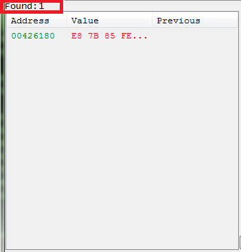

Auto Assembler - AOBs
What is an AOB? An AOB is just an Array of Bytes, it tends to be used as a signature. A signature is really only an AOB with wild cards. A signature can be found even if the address where it is changes, so long as the signature still exists.
So if we look at the code for step 8 of the CE tutorial (x32), we see some code like this.
Tutorial-i386.exe+26180 - E8 7B85FEFF - call Tutorial-i386.exe+E700 Tutorial-i386.exe+26185 - 8B 55 DC - mov edx,[ebp-24] //// AOB starts here Tutorial-i386.exe+26188 - 89 42 18 - mov [edx+18],eax //// Injecting here Tutorial-i386.exe+2618B - 8B 45 DC - mov eax,[ebp-24] Tutorial-i386.exe+2618E - 8B 40 18 - mov eax,[eax+18] Tutorial-i386.exe+26191 - 8D 55 B0 - lea edx,[ebp-50] Tutorial-i386.exe+26194 - E8 073C0100 - call Tutorial-i386.exe+39DA0
So we could just inject at the address Tutorial-i386.exe+26188, but let's setup an AOB.
And we could just try 89 42 18 8B 45 DC 8B 40 18 8D 55 B0, but what if the registry changes or the offset.
So let's say that we always have a CALL, MOV, MOV, MOV, LEA, CALL, ... Then we could make an AOB like this:
8Bxxxx89xxxx8Bxxxx8Bxxxx8DxxxxE8xxxxxxxx8Bxxxx8Bxxxx8Bxxxxxxxxxx
- Note: Any none byte characters are wild cards, so X and ? are wild cards.
- Note: Any wild cards at the end of an AOB are really pointless, but they are left here to better show the instruction size for clarity.
8Bxxxx89xxxx8Bxxxx8Bxxxx8DxxxxE8xxxxxxxx8Bxxxx8Bxxxx8B
So let's setup CE for an AOB scan.
{kind=link}
And after clicking first scan we are looking to get just one result.

{kind=link}
If you get more results then one just add more bytes to the signature.
So to use this signature we'll need to use an offset. Let's look at a script using the signature.
define(step8WrtBytes, 89 42 18 8B 45 DC) //// //// ------------------------------ ENABLE ------------------------------ [ENABLE] aobScanModule(aobStep8WrtHook, Tutorial-i386.exe, 8Bxxxx89xxxx8Bxxxx8Bxxxx8DxxxxE8xxxxxxxx8Bxxxx8Bxxxx8Bxxxxxxxxxx) //// or with aobScan //aobScan(aobStep8WrtHook, 8Bxxxx89xxxx8Bxxxx8Bxxxx8DxxxxE8xxxxxxxx8Bxxxx8Bxxxx8Bxxxxxxxxxx) define(injStep8WrtHook, aobStep8WrtHook+3) //// Here the offset is set, to be used for enabling and disabling. assert(injStep8WrtHook, step8WrtBytes) //// Here the bytes are asserted to be compatable with the process version. registerSymbol(injStep8WrtHook) alloc(memStep8WrtHook, 0x400, injStep8WrtHook) //... //// //// ---------- Injection Point ---------- injStep8WrtHook: jmp step8wrtn_code nop step8wrtreturn: //// //// ------------------------------ DISABLE ------------------------------ [DISABLE] //// //// ---------- Injection Point ---------- injStep8WrtHook: db step8WrtBytes unregisterSymbol(injStep8WrtHook) unregisterSymbol(ptrStep8WrtHook) dealloc(memStep8WrtHook)
And that's really the basics of AOB signatures.
But with step 8 we could also use an AOB to pull a pointer.
Tutorial-i386.exe+25FB1 - A1 60D65F00 - mov eax,[Tutorial-i386.exe+1FD660] Tutorial-i386.exe+25FB6 - 89 45 E8 - mov [ebp-18],eax Tutorial-i386.exe+25FB9 - 8B 45 E8 - mov eax,[ebp-18] Tutorial-i386.exe+25FBC - 8B 55 E8 - mov edx,[ebp-18] Tutorial-i386.exe+25FBF - 8B 00 - mov eax,[eax] Tutorial-i386.exe+25FC1 - 3B 42 04 - cmp eax,[edx+04] Tutorial-i386.exe+25FC4 - 74 02 - je Tutorial-i386.exe+25FC8 Tutorial-i386.exe+25FC6 - EB 4F - jmp Tutorial-i386.exe+26017
//// //// ------------------------------ ENABLE ------------------------------ [ENABLE] aobScanModule(aobStep8Hook, Tutorial-i386.exe, A1xxxxxxxx89xxxx8Bxxxx8Bxxxx8Bxx3Bxxxx74xxEBxx8Bxxxx8Bxxxx8Bxxxx3Bxxxx) define(ptrStep8Hook, aobStep8Hook+1) registerSymbol(ptrStep8Hook) //// //// ------------------------------ DISABLE ------------------------------ [DISABLE] unregisterSymbol(ptrStep8Hook)